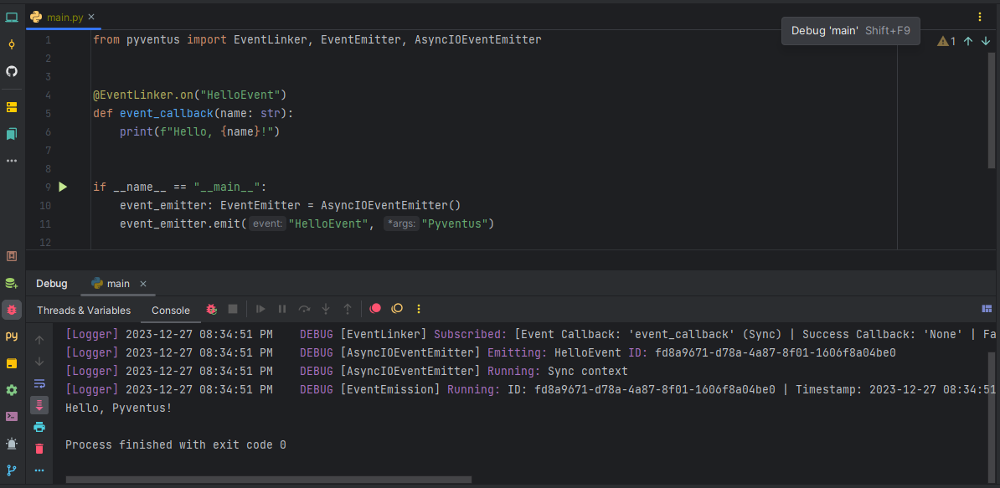

Master the Event Emitter¶
üèóÔ∏è Work in Progress
This page is a work in progress.
In the previous tutorial, we learned how to link events with their event handlers using the
EventLinker. Now, let's dive into the process of dispatching events and triggering the associated callbacks.
This tutorial will introduce you to the EventEmitter class, which plays a crucial role in this event-driven
system.
What is an Event Emitter?¶
In event-driven programming, an Event Emitter is a variation of the Observer pattern that allows you to easily manage and handle events in a decoupled manner. The Observer pattern provides a way for objects to subscribe to and receive notifications from a subject when its state changes. Similarly, an Event Emitter enables objects/functions to subscribe to and receive notifications when specific events occur.
Pyventus Event Emitter¶
In Pyventus, the Event Emitter concept remains largely the same, but with a few unique features of its own. The Pyventus Event Emitter focuses only on emitting events, while the association logic is handled by the Event Linker class. This separation of concerns makes both classes cleaner and easier to understand, as well as allowing them to be modified independently as needed. Furthermore, it offers the flexibility to change the event emitter instance at runtime without the need to reconfigure all connections.
So, what exactly is the Pyventus EventEmitter? It is an abstract base class that provides a common
interface for emitting events and notifying registered callbacks when those events occur. It serves as the
foundation for implementing custom event emitters with specific dispatch strategies.
Purpose of Pyventus Event Emitter¶
The main goal of the EventEmitter base class is to decouple the event emission process from the
underlying implementation. This decoupling promotes flexibility, adaptability, and adheres to the
Open-Closed principle, allowing
the implementation of custom event emitters without impacting existing consumers.
The EventEmitter presents a unified API with two key methods: emit() and _process(). These methods
can be used in both synchronous and asynchronous contexts to emit events and handle their emission. The emit()
method is used to invoke an event, while the _process() method is an abstract method responsible for processing
the execution of the emitted event.
Built-in Event Emitters¶
Pyventus includes several built-in event emitters
by default. For instance, the AsyncIOEventEmitter leverages the AsyncIO framework to handle the execution of
event emissions, while the RQEventEmitter utilizes Redis Queue pub/sub system with workers to manage the
execution of event emissions.
Driving Innovation Through Collaboration
Pyventus is an open source project that welcomes community involvement. If you wish to contribute additional event emitters, improvements, or bug fixes, please check the Contributing section for guidelines on collaborating. Together, we can further the possibilities of event-driven development.
Custom Event Emitters¶
Pyventus provides a powerful abstraction layer for creating custom event emitters, allowing you to tailor their behavior and capabilities to suit your specific needs. In this section, we will guide you through the process of creating a custom event emitter specifically designed for the FastAPI framework.
The objective is to leverage FastAPI's BackgroundTasks feature to efficiently process the execution of event emissions within your FastAPI application. Before we jump into the implementation details, make sure you have FastAPI properly installed and set up in your development environment.
Defining and Implementing the Custom Event Emitter Class¶
To create the custom event emitter for FastAPI, we'll define a class called FastAPIEventEmitter. This
class will extend the base EventEmitter class and implement the abstract _process() method using the
FastAPI's background tasks to handle the event emission properly.
- Stores the FastAPI background tasks object.
- Executes the event handler callbacks as background tasks.
Once the custom event emitter is defined, you can integrate it into your code as follows:
- Simulate a random delay.
To test the custom event emitter integration follow these steps...
Run the server with:
Open your browser at http://127.0.0.1:8000/print. You will see the JSON response as:
And also you are going see the outputs of the event emitter in the console logs as:
Official FastAPIEventEmitter Integration
In case you're interested in integrating Pyventus with FastAPI, you can refer to the official Pyventus FastAPI Event Emitter implementation.
Runtime Flexibility¶
Another key feature of the Pyventus EventEmitter is the decoupling of event dispatching from the
underlying implementation that processes the event handlers. This, combined with the EventLinker, allows
you to change the event emitter at runtime without reconfiguring all the connections or any complex logic. We can
use the base EventEmitter as a dependency and then change the concrete instance to suit your needs. Let's
demonstrate this using the AsyncIOEventEmitter and ExecutorEventEmitter:
In the example above, we defined a helper function handle_greet_event that accepts an EventEmitter
instance as a parameter. This allows us to dynamically switch between the AsyncIOEventEmitter and the
ExecutorEventEmitter depending on our requirements. This flexibility enables us to adapt the event
emitter implementation at runtime without modifying the core application logic.
Using Custom Event Linkers¶
By default, event emitters come with the base EventLinker registry assigned to the event_linker
property. However, you have the flexibility to specify the EventLinker class that will be used by the
EventEmitter. To configure this option, simply manually set the EventLinker class in the constructor.
In the example above, we have assigned a custom event linker to the specific class of the EventEmitter.
When we emit the PasswordResetEvent, we can see that only the handle_users_password_reset_event(), which was
registered within the UserEventLinker namespace, gets triggered and removed. The handle_any_password_reset_event()
callback, registered in a different EventLinker context, does not get triggered.
Debug Mode¶
Pyventus' EventEmitter offers a useful debug mode feature to help you understand the flow of events
and troubleshoot your event-driven application. You can enable debug mode in the EventEmitter using the following
options:
Global Debug Mode¶
By default, Pyventus makes use of Python's global debug tracing feature. To activate the global debug mode, simply run your code in an IDE's debugger mode. This allows you to observe the execution of events and trace their paths.

Instance Debug Flag¶
Alternatively, if you want to enable or disable debug mode for a specific EventEmitter instance, you
can use the debug flag provided by the concrete implementation. Setting the debug flag to True enables
debug mode for that instance, while setting it to False disables debug mode. Here's an example:
Best Practices¶
To fully leverage the power of the EventEmitter, it is recommended to use the base EventEmitter as a
dependency instead of any concrete implementation. This allows you to easily switch between different event
emitter implementations at runtime, providing flexibility and adaptability to your code.
Recap¶
In this tutorial, we learned about the EventEmitter component and its role in dispatching events and
triggering associated callbacks. We explored the base EventEmitter class, its unified async/sync API, and
the process of creating custom event emitters. We also covered the usage of custom event linkers, best
practices for using the EventEmitter, and the debug mode options provided by Pyventus.